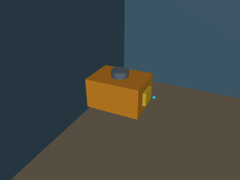

ROV 水下机器人 MuJoCo 物理仿真与神经网络建图导航
在 MuJoCo 中搭建六自由度 ROV（遥控潜水器），完成物理仿真与 6-DOF 键盘遥控、
声呐/深度感知与轨迹控制、建图导航与 SLAM 同步仿真、端到端声呐图航行四项任务。
浮力/阻力/推力全部显式建模，飞控为速度+姿态串级控制器；感知、规划、控制与端到端网络
均为纯 NumPy 实现，通过 ROS Noetic 封装，rostopic/main.py 两种入口。

项目结构概览
rov_mujoco_slam_nn_nav/
├── rov_mujoco_slam_nn_nav/ # 算法库
│ ├── model.py # MJCF：ROV 本体 + 三个水域场景
│ ├── control.py # 6-DOF 速度/姿态控制（浮力·阻力前馈）
│ ├── sim.py # MuJoCo 内核（xfrc 推力 + 浮力 + 阻力）
│ ├── sensors.py # 180 线声呐 / 24×32 深度 / IMU / 里程计
│ ├── mapping.py # 对数几率栅格 + 相关扫描匹配
│ ├── planning.py # A* + 膨胀代价地图
│ ├── nn.py # NumPy MLP / CNN + Adam
│ ├── neural.py # 四个网络的推理封装
│ └── nav.py # 建图导航栈
├── scripts/ # sim / teleop / nav / e2e / metrics
├── launch/main.launch # mode:=teleop|nav|e2e
├── models/ # 4 个网络权重
├── tools/ # 采集 / 训练 / 评测 / 录 GIF
├── tests/ # 无 ROS 单元测试
├── main.py # 一键入口（不依赖 ROS）
├── CMakeLists.txt
└── package.xml
一、环境准备与依赖安装
| 项目 | 版本 |
|---|---|
| 系统 | Ubuntu 20.04 LTS |
| ROS | Noetic（Python 3.8） |
| 物理引擎 | MuJoCo 3.x |
| 其他 | numpy、pillow |
pip3 install --user "mujoco>=3.1,<3.3" numpy pillow
mkdir -p ~/rov_ws/src && cd ~/rov_ws
catkin_make && source devel/setup.bash
二、启动流程
# 6-DOF 键盘遥控
roslaunch rov_mujoco_slam_nn_nav main.launch mode:=teleop scene:=pool
# 建图 + 导航 + SLAM 同步
roslaunch rov_mujoco_slam_nn_nav main.launch mode:=nav scene:=trench
# 端到端声呐图
roslaunch rov_mujoco_slam_nn_nav main.launch mode:=e2e scene:=trench
# 不依赖 ROS
python3 main.py --mode nav --scene pipe_field
python3 main.py --mode test
按键：W/S 进退、A/D 横移、R/F 升沉、Q/E 偏航、空格 悬停、X 退出。
无图形界面加 terminal:=false 后手动 rosrun rov_mujoco_slam_nn_nav teleop_node.py。
三、实现要点
3.1 水动力模型
ROV 质量 12.9 kg、排水体积 13.2 L，净浮力约 +3 N；阻力按各轴线性+二次项建模：
控制器给推力并把浮力、重力、阻力作为前馈抵消：
闭环因此退化为一阶跟踪。姿态用 PD 保持水平、偏航跟踪指令。 实测：定深 1 s 高度漂移 < 0.08 m；指令 0.5 m/s 前飞 2 s 位移 0.85 m。
3.2 声呐与建图
前视声呐用 180 条射线模拟（含噪声），1.0 m 定高扫描；对数几率栅格 + 相关扫描匹配 建图，A* 在 0.46 m 膨胀代价地图上规划；执行层把前视点误差转成机体系速度 （ROV 可全向平移），交给 6-DOF 控制器。
3.3 神经网络
| 网络 | 结构 | 输入 → 输出 | 训练方式 |
|---|---|---|---|
| 感知 | MLP 9-32-32-1 | 9 线声呐滑窗 → 中心距离 | 自监督 |
| 规划 | MLP 124-64-64-2 | 11×11 局部栅格 + 目标 → 方向 | 克隆 A* |
| 控制 | MLP 6-64-64-3 | 距离/航向/三向净空 → | 克隆经典栈 |
| 端到端 | Conv(1→8,5×5,s2)+FC | 24×32 深度图 → | 行为克隆 |
四、实验结果
三场景闭环（目标 0.4 m 内成功）：
| 策略 | pool | pipe_field | trench |
|---|---|---|---|
| 经典栈 | ✅ 11.2 s / 0.392 m / ATE 0.073 | ✅ 9.7 s / 0.390 m / 0.013 | ✅ 9.3 s / 0.395 m / 0.015 |
| 神经规划+控制 | ❌ 90 s 未达 | ✅ 9.7 s / 0.391 m | ✅ 9.3 s / 0.392 m |
| 端到端 CNN | ❌ 坠底 | ❌ 坠底 | ❌ 坠底 |
离线指标：
| 指标 | 结果 |
|---|---|
| 声呐去噪 | RMSE 0.582 → 0.027 m |
| 规划方向误差 | 4.32°（验证集，99.4% 在 45° 内） |
| 控制器 | vx MAE 0.116，vy MAE 0.039，ω MAE 0.098 |
| 端到端 | vx MAE 0.564（数据仅 466 帧，明显欠拟合） |
失败分析：端到端网络只用单帧深度图、训练样本少，出航几米后就会撞壁； 神经规划在 pool 这种"目标被大障碍遮挡"的场景被目标方向主导。本包保留 A* 作为 安全回退，并把经典栈作为默认演示路径。
五、常见报错与解决方法
1. ModuleNotFoundError: No module named 'mujoco'
pip3 install --user "mujoco>=3.1,<3.3"，确认 python3 -c "import mujoco" 通过。
2. Package 'rov_mujoco_slam_nn_nav' not found
没有 source ~/rov_ws/devel/setup.bash。
3. ROV 沉底 / 浮不起来
检查 MODEL.VOLUME 与质量是否匹配（净浮力应在 +2~+5 N）；~depth 低于 0.4 m 会触底。
4. 键盘节点没反应
main.launch 默认用 xterm，需要窗口焦点；SSH 场景用 terminal:=false 后 rosrun。
5. 导航一直 blocked
地图未建立，等 1–2 s；或把 ~inflation 从 0.46 降到 0.32。
6. 虚拟机里录 GIF 黑屏
GIF 用 MuJoCo 离屏渲染，不需要显示器；渲染器在 mj_forward 之后创建（sim.py 已延迟）。
六、扩展方向
- 加 DVL/多波束声呐，做 3D 建图与海底地形测绘；
- 用洋流扰动测试控制鲁棒性（与
mjc_rov_current_teleop的洋流模型对齐）； - 端到端补数据（历史帧 + DAgger），或改用声呐极坐标图输入。